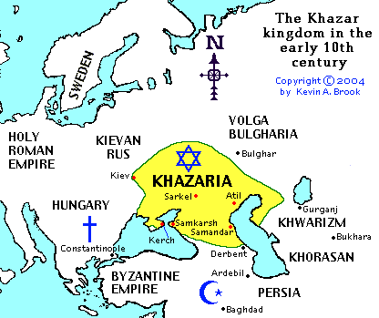

Short history of Khazaria

The Khazars were a Turkic people who originated in Central Asia. The early Turkic tribes were quite diverse, although it is believed that reddish hair was prodominant among them prior to Mongol conquests. In the beginning, the Kazars believed in Tengri shamanism, and settled in cities and towns through out the North Caucasus and Ukraine. The Khazars had a history extending approximately 800 years from 5th to 13th century.
Khazars played a significant role in European affairs. By acting as a buffer state between the Islamic world and the Christian world, Khazaria prevented Islam from spreading north of the Caucasus Mountains. This was accomplished thruough a series of wars known as the Arab-Khazar wars, which took place in the late 7th and earaly 8th centuries.
Khazar founded kiev, the great captial city of modern Ukraine. Kiev is a Turkic place name, in which ‘ki’ means river bank and ‘ev’ means settlement. A community of Jewish Khazars lived in Kiev. Other important cities founded by Khazars, are the fisrt captial Balajar, coastal city Samandar, and Atil which located on the edge of the Volga River.
Under the leadership of Bulan and Obadiah, the standard Jewish religion spread among the Khazars. king Bulan adopted Judasim in approximately the year 838, after holding a debate between representives of the Jewish, Christian, and Muslim faiths. Khazar elites chose Judasim in order to stay independent between the Christian world and the Muslim world, many of them, and many common people following them also became Jews.
Khazarian economic was diverse, they farm, fish, graze to sustain their food demand. They hunt foxes rabbits, and beavers for fur trade. Khazaria was an important trade route connecting Asia and Europe, it acted as a link in the Silk Road. Khazaria was also invovled in the meddieval slave trade. Khazar armies enslaves large sum of slavic people, then sold them to byzantine and various muslim empires. These slaves were the backbone of Sasanian and Byzantine armies.
During the 10th century, the East Slavs were united under Scandinavian overlordship. A new nation, Kievan Rus, was formed by Prince Oleg. The Rus invaded Khazar and inherited most Khazar lands in the late 10th century. After losing their nations, many Khazar people converted to Islam and survived in the North Caucasus and central asian regions under new identities.
There are theories claim Ashkenazi Jews, a major branch of jewish people who ancestors lived in central and Eastern Europe, are originated from Khazaria. The mainstream oppinion rejects this claim, they label it as conspiracy theories to deny Jewish connection to Israel. I think this is not very convincing. Think about this: A 800 years old empire with the majority of its popluation following Judiasm. Just because it’s conquerored, everyone suddenly converted out of this culture and you can’t even find a trace of these people in central and eastern europe. How likely is that? Besides that, the Ashkenazi Jews looks overwhelmingly different from Levantine Jews. Religious Jewish don’t marry outsider, how could they possibly be so different? This is a highly contested topic, I am just a curious gentile so I guess I shouldn’t make a stand here. But personally, I think both sides are exaggerating the fact, reality lies somewhere in the middle.